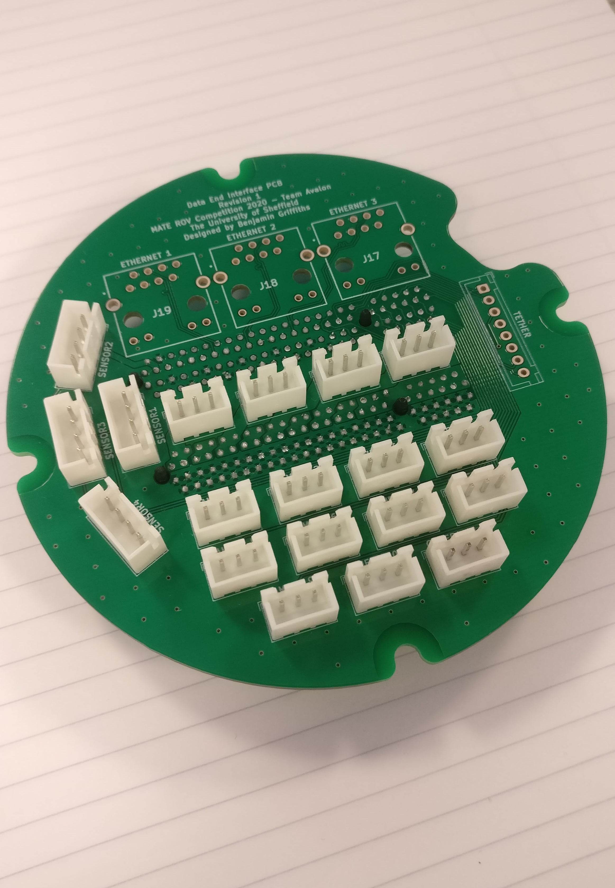
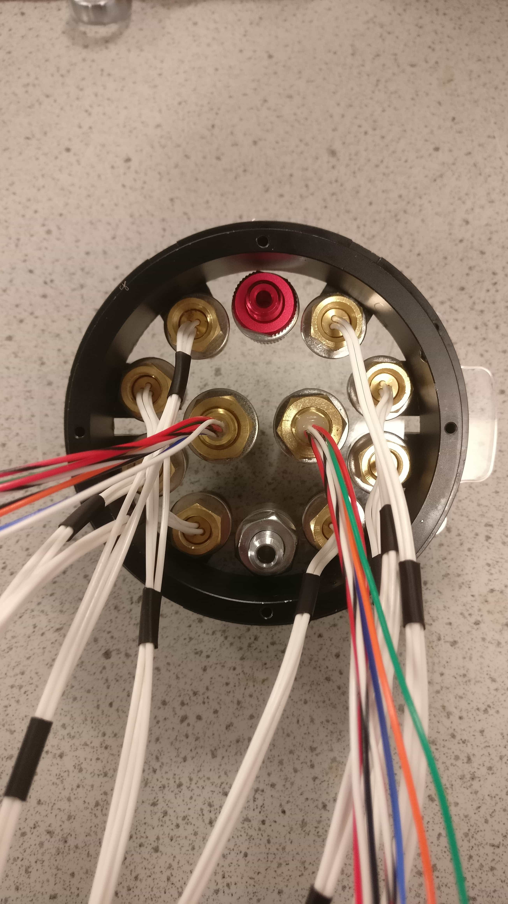

As part of the fourth-year group project for my degree, I was part of the electrical team, and the lead software engineer in The University of Sheffield's team Avalon. This was a multidisciplinary student led team, tasked with designing and manufacturing an underwater remotely operated vehicle (ROV) to compete at the 2020 Marine and Technology Education (MATE) competition.
The theme of the 2020 competition was ocean pollution, so tasks to perform included detecting unhealthy coral reefs, collecting plastic pollution from the ocean floor and the surface, and maintaining seabins.
ROV Control Program
My main contribution towards this project was designing and developing a graphical user interface to pilot the ROV. The interface would be used by the pilot to manoeuvre the ROV and control its on-board devices during the competition, all whilst the ROV is fully submerged.
The key functional requirements of the program are as follows:
- Serial communication with the ROVs electronics control system
- Receive pilot inputs from a controller
- Perform thrust vectoring to control the ROV’s thrusters
- Toggle the ROV’s pneumatic actuators
- Read and display measurements from a range of sensors
- Bind controller buttons to ROV functions
- Display live on-board camera feeds from a range of USB, IP and analogue cameras
- Process the camera feeds with machine vision algorithms
- Make the program highly configurable to adapt to future ROV designs
- Save the programs configuration to different user profiles
I developed the program in Python using the PyQt5 library, a Python binding of the popular Qt application development framework. And other libraries such as PySerial, PyGame and OpenCV were used for serial communication with the ROV, receiving data from an XBOX One controller and displaying camera feeds.
The user interface is split into a control panel and configuration tab, which can be flipped between using the navigation buttons at the top of the program.
The control panel tab contains all the essential controls the pilot requires to operate the ROV during the competition, such as viewing live camera feeds, initiating serial communication links, toggling actuators and viewing sensors readings. It was designed to be user friendly and intuitive so that the pilot could focus on the competition tasks and access ROV controls quickly. Since the pilot is not permitted to see the physical ROV during the competition, they must rely solely on live camera feeds, hence they are the main attraction on the control panel. There is one large primary feed, and three smaller secondary feeds, which can all display any of the available camera via USB or an RTSP stream. If the pilot wants to display one of the secondary cameras on the large feed, all they have to do it click on the secondary feed, and it will swap with the primary feed.
The configuration tab is where the program is configured to match the pilot’s preferences and ROV setup. Almost every aspect of the program is configurable, such as the number of actuators, the address of the camera feeds, the location of each thruster and the preferred controller key bindings. The programs configuration can be saved to user profiles, which are loaded during program launch to apply the settings. Multiple user profiles can be set up to match different ROV configurations or different pilot key binding preferences.
There is even a light theme available for those who prefer it, or for when the sun is shining.
The code and documentation for the program can be found on the GitHub repository.
Embedded Software
I was also responsible for developing the code embedded in the ROVs on-board microcontroller, which is written in C/C++ and is responsible reacting to commands from the ROV control program, to generate the signals that control the ROV’s on-board devices. These include generating PWM signals for H-bridge modules, processing incoming data from the tether, and using communication protocols such as SPI and I2C to read data from sensors. The program was developed on the Arduino platform, which made preliminary testing possible on a standard Arduino Uno development board, independent of the full electronics control system.
The functionality of the embedded software is centred around a custom communication protocol, which uses human-readable ASCII string commands to control the ROV. Each command consists of a) Command initialiser, b) Function identifier and c) Data where necessary. The diagram and table below show the basic structure of the commands, and a few example commands that the ROV control program would typically send.

| Operation | Initialiser | Identifier | Data |
|---|---|---|---|
| Get ROV identity | ?I | - | - |
| Turn actuators 1 & 3 ON | ?R | A | 101 |
| Set thrusters 1 & 3 to full speed | ?R | T | 999500999500500500500500 |
| Get sensor readings | ?R | S | - |
The code and documentation for the embedded software can be found on the GitHub repository.
Electronics Control System
As a member of the electrical team, I also contributed to the design and manufacture of the electronics control system, which is mounted inside a water tight capsule on the ROVs chassis, and is responsible for controlling all the electronics, electro-mechanical devices, and communicating with the surface via the tether. The physical structure was similar to the design we came up with for the 2019 MATE ROV competition, taking the form of an interconnected stack of modular PCBs shown below, but the circuit design is completely new. I designed the interface PCBs, and used CAD to design the underwater connector layout. The interface PCBs are responsible for routing power and data signals from the underwater connecters to the data PCB, designed by Joe Orford (LinkedIn), the power PCB, designed by George Osmond (LinkedIn), and the electronics speed controller (ESC) PCBs, designed by Henry O’Keeffe (LinkedIn).
As their names suggest, the data PCB is responsible for all the low-level signals within the control system, and contains the main microcontroller for the control software to run on, and multiplexers to switch between camera feeds. In contrast, the power PCB handles all the high current and high voltage signals, such as the main switching regulators, h-bridges to control the pneumatic solenoid valves, and the high current traces for all 8 of the 3-phase thruster motors. The ESCs connect to the underside of the power PCB, and generate the 3-phase synchronous signals to control the speed of the Blue Robotics T200 brushless thrusters.
The interface PCBs are bolted to both end caps of the capsule. The power side interface PCB routes the main +48V power input and 8x 3-phase thruster lines to the power PCB. On the other hand, the data interface PCB routes the digital and analogue camera, sensor, h-bridge, mini-ROV and tether lines to the data and power PCBs, whilst routing data lines between the data and power PCBs to control the h-bridges and ESCs.
 |
|
|  | |
| Power End Interface PCB | Data End Interface PCB |
The underwater connectors were supplied by MacArtney and Bulgin, with the MacArtney connectors been used primarily for high current connections such as the thrusters and main power input, whereas the Bulgin connectors were used for data connection such as USB and fibre optic. I designed the connector layout in Autodesk Fusion 360, where the connectors are sealed to a 10mm thick clear acrylic mounting plate, which is bolted to the capsules end caps. The wires from the connectors are then terminated to the interface PCBs via solder or other connectors. Having access to underwater connectors was a massive addition to the project, allowing us to disconnect all the ROVs on-board devices, which helps with cable management and maintenance, something which was a struggle in previous competitions.
 |
|
|  | |
| Capsule power endcap | Capsule data endcap (without Bulgin connectors) |
The data end of the capsule had too many connectors to comfortably fit onto the 4” diameter end cap, so an extension was designed, which increased the surface area available to attach connectors, and provided more area to manage the large number of wires. However, the COVID-19 pandemic restricted our access to the manufacturing facilities required before we could produce this part.
In addition to the main electronics control system, I designed a compact testing PCB for the ESC modules, which would allow the ESC software to be developed and tested independently to the rest of the system, eliminating any progress bottle necks. The board contained an ATmega 32u4 microcontroller, a connector for an ESC module to slot into, the +48V main input and 3-phase terminal block connector, along with a range of buttons, switching and LEDs for control and debugging.
ROV Chassis
To test the electronics control system, in particular, the thrust vectoring algorithm to control the ROVs thruster, we needed a chassis. Initially, I designed a simple test jig that could mount all 8 thrusters to test the algorithm is a container of water, which helped to fine tune to control sensitivity and verify 6-axis control could be achieved. The thruster configuration had each thruster offset by 45° to the X, Y and Z axis, which in theory could provide the greatest thrust in all 8 axes of control. However, this test jig could only mount the thrusters, not the whole electronics control system or other devices.
A few weeks later I started designing a full ROV chassis, inspired by the TIE fighter design from Star Wars (well, I think it looks similar), that could be manufactured via laser cutting the side panels from 6mm Delrin (also known as Acetal), and then using a strip heater to bend the required sections. The design, shown below, with the angled sections to mount the thrusters to was advantageous because it allowed the space within the chassis to be maximised, whilst keeping the chassis within the competition size constraints (must fit inside a 64cm diameter circle). This would result in easier mounting of the various cameras, actuatorS, and managing cables without blocking the thrusters. The cross beams that connect the two side panels together (same as previous ROV designs) have a uniform grid of mounting holes, to mount all the ROVs on-board devices in a highly modular fashion. Unfortunately, the COVID-19 pandemic caused all the universities manufacturing facilities to close down before we could get the chance to manufacture it, so for now the design will have to wait until future competitions.
Surface Control Station
In previous competitions, all the equipment required on the surface to pilot the ROV such as the computer, camera DVR, power supplies, monitors and controllers have all been separate pieces, that have to be rushed to be connected up before we can start the tasks. For the 2020 competition, I wanted to simplify and speed up this process, by developing a surface control station – a box with everything contained, so that the pilot can simply open the box, turn it on, and everything is already connected ready to go. Ultimately, I wanted an all-in-one, solution to pilot the ROV on location. After a few hours of online shopping for equipment cases, we settled for the MAXCASE Max-800 rugged and waterproof plastic case, which was the perfect width to fit two monitors side by side in the lid, and deep enough to fit the computer and other miscellaneous equipment.
The monitors were connected to the inside of the lid using heavy duty 3M Velcro, which was so strong we might as well have glued the monitors in place. One monitor is for displaying the ROV control programs interface, and the other is to display the DVR output to view the low-latency analogue camera feeds (as a backup). The base of the case contained a custom-built PC to run the ROV control program on, a router to stream the analogue camera feeds to the PC via ethernet, and the relevant power supplies. The base was covered in panels which contained configurable buttons, power switches and connectors as well as the connectors to attach the ROVs tether, including ethernet, fibre optic and +48V power. Furthermore, the base of the case had space to store a keyboard and XBOX controller.
Whilst we made a start on manufacturing the surface control station, the COVID-19 pandemic closed crucial manufacturing facilities before we got the change to laser cut the panels, but we got the PC and monitors up and running.

Final Report & Presentation
As this project went towards my degree, we wrote a detailed final report and I put together out fina symposia video presentation shown below.